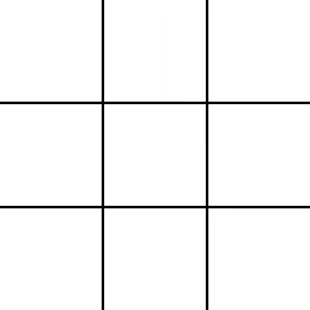

Experience
Take turns marking a three-by-three grid and try to complete a line before the opposing side. Every choice changes both the available winning routes and the opportunities that need defending.

Description
Every mark changes the visible set of winning opportunities. The player must recognize an immediate threat, decide whether to block it, and look for a placement that creates more than one useful continuation.
The small board keeps the entire state visible. Win, loss, and draw outcomes follow directly from the arrangement of the marks, making the interaction compact and easy to review.
Detailed features
Turn-based grid
Turn-based interaction separates choosing an action from resolving it. That structure gives the player time to compare options and understand the resulting change in game state.
Three-in-a-row objective
The whole board provides the state for a strategic decision. Each placement or move changes both the player’s opportunities and the threats that need to be prevented.
Win and draw states
The interface communicates the result of an action or the progress toward an objective. That feedback makes the current state and the next goal easier to understand.
Build summary
The project is presented with JavaScript · HTML Canvas. Its implementation connects the input or controls, the project’s changing state, and the rendered interface. The Source action opens the saved code or build material for this entry.
- Technology
- JavaScript · HTML Canvas
- Scope
- Interactive project
- Feature focus
- Turn-based grid
Feature video
Project recording · 610 × 610 · Original resolution